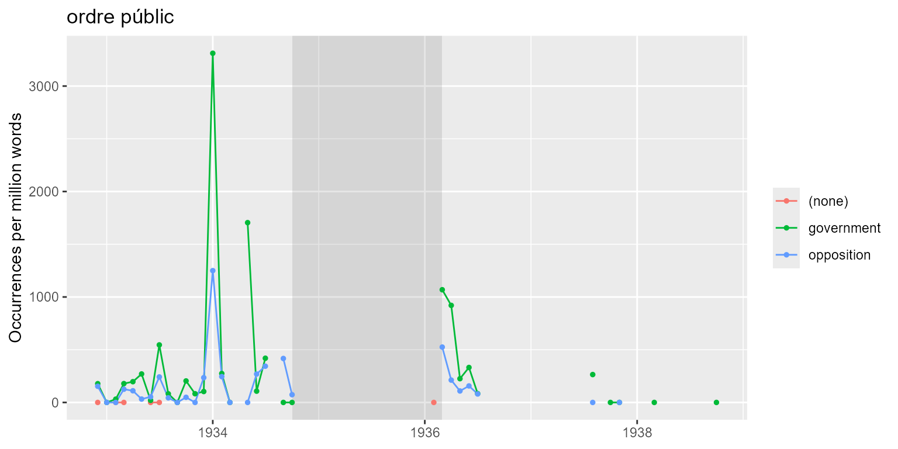

Voices of the Republic recull els debats del ple del Parlament de Catalunya durant la Segona República, des de la constitució el desembre de 1932 fins a l’última sessió l’octubre de 1938, separats en intervencions. parlcat2Rep els carrega a R amb la persona que parla, el seu partit a la data de la intervenció i el càrrec que ocupa.
Instal·lació
# install.packages("pak")
pak::pak("hunsao/parlcat2Rep")Les metadades de les intervencions i les taules de referència ja vénen amb el paquet. El text de les intervencions (uns 6 MB) es baixa una sola vegada i es desa en una carpeta de memòria cau:
Què hi ha al corpus
meta <- parl_metadata()
meta[c("n_speeches", "n_sessions", "n_words", "n_persons", "period")]
#> $n_speeches
#> [1] 32666
#>
#> $n_sessions
#> [1] 259
#>
#> $n_words
#> [1] 4568105
#>
#> $n_persons
#> [1] 89
#>
#> $period
#> [1] "1932-12-06" "1938-10-01"No hi ha sessions el 1935: el Parlament va estar suspès de l’octubre de 1934 al febrer de 1936, i el 1937 i el 1938 gairebé no es va reunir.
table(parl_sessions()$any)
#>
#> 1932 1933 1934 1936 1937 1938
#> 12 127 68 47 3 2Carregar intervencions
parl_speeches() retorna una fila per intervenció. Feu
servir text = FALSE quan només calguin les metadades: és
més ràpid i no necessita el text descarregat.
lliga_1934 <- parl_speeches(year = 1934, party = "LR", text = FALSE)
nrow(lliga_1934)
#> [1] 416
head(lliga_1934[, c("data", "nom_sencer", "party_data", "paraules")])
#> # A tibble: 6 × 4
#> data nom_sencer party_data paraules
#> <date> <chr> <chr> <int>
#> 1 1934-01-05 Lluís Duran i Ventosa LR 3
#> 2 1934-01-05 Lluís Duran i Ventosa LR 732
#> 3 1934-01-05 Lluís Duran i Ventosa LR 1364
#> 4 1934-01-05 Ferran Valls i Taberner LR 3
#> 5 1934-01-05 Lluís Duran i Ventosa LR 274
#> 6 1934-01-05 Joan Vallès i Pujals LR 22Els filtres principals són year, from i
to, person, party
(party_data, el partit a la data), session,
side (govern o oposició) i office.
companys <- parl_speeches(person = "Lluís Companys", include_chair = FALSE)
#> "Lluís Companys" matched: "Lluís Companys i Jover"
nrow(companys)
#> [1] 45
substr(companys$text[1], 1, 200)
#> [1] "Senyors Diputats. Honorable senyor President : Permeteu-me de pronunciar unes paraules breus destinades a recollir les que ha pronunciat el venerable President de Catalunya, en la magnífica i històric"Qui parla més
parl_persons() dona una fila per orador. Els presidents
del Parlament encapçalen el recompte brut perquè presidir una sessió
genera moltes intervencions curtes; per això també hi ha els recomptes
sense presidència.
p <- parl_persons()
head(p[order(-p$paraules_sense_presidencia),
c("nom_sencer", "party", "n_sense_presidencia", "paraules_sense_presidencia")], 8)
#> # A tibble: 8 × 4
#> nom_sencer party n_sense_presidencia paraules_sense_presidencia
#> <chr> <chr> <int> <dbl>
#> 1 Estanislau Ruiz i Ponsetí USC 1047 216875
#> 2 Lluís Duran i Ventosa LR 1221 196980
#> 3 Miquel Vidal i Guardiola LR 1435 193688
#> 4 Joan Vallès i Pujals LR 820 177218
#> 5 Carles Pi i Sunyer ERC 831 174809
#> 6 Joan Ventosa i Calvell LR 999 168237
#> 7 Pere Coromines i Montanya ERC 621 150535
#> 8 Joan Fronjosà i Salomó USC 844 145195Cercar al text
rab <- parl_search("rabassaires", include_chair = FALSE)
nrow(rab)
#> [1] 100
table(rab$party_data)
#>
#> ACR ERC LR PNRE PRA UDC UR USC
#> 2 21 40 1 3 2 13 18
head(parl_kwic("rabassaires", window = 6)[, c("data", "nom_sencer", "pre", "match", "post")], 5)
#> # A tibble: 5 × 5
#> data nom_sencer pre match post
#> <date> <chr> <chr> <chr> <chr>
#> 1 1933-02-22 Pere Coromines i Montanya públic. Encomano a tots, ta… raba… com …
#> 2 1933-02-22 Joan Vallès i Pujals pensar en propietaris, en a… raba… , pe…
#> 3 1933-03-17 Joan Comorera i Soler el català de la Unió de Raba… . To…
#> 4 1933-03-29 Francesc Riera i Claramunt fos precís que la Unió de Raba… , qu…
#> 5 1933-03-29 Lluís Duran i Ventosa que aquesta, que és la dels raba… inte…Tendències
parl_trend() dona les aparicions per milió de paraules,
perquè els mesos amb més debat no pesin més. La franja gris marca la
suspensió del Parlament.
parl_trend("ordre públic", group = "side", include_chair = FALSE) |>
parl_plot_trend()
Següents passos
- Guia de funcions i dades: totes les funcions i taules.
- Metodologia, fonts i advertiments: com s’ha construït el corpus i què cal decidir abans de comptar.